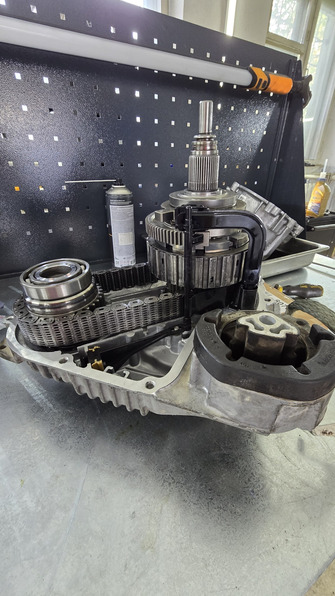

Видеть причину.
Показываем, что требует внимания, и объясняем результаты диагностики.
НЕЗАВИСИМЫЙ АВТОСЕРВИС · САРАТОВ
Чтобы вы думали о дороге.
Всё остальное — внимание RSV.
БОЛЬШЕ, ЧЕМ ИСПРАВНЫЙ АВТОМОБИЛЬ
Хороший автомобиль создан для удовольствия от движения. Наша работа — помочь сохранить это ощущение.
Поэтому мы начинаем не с замены деталей, а с понимания. Проверяем, объясняем причины и вместе с вами выбираем обоснованное решение.
Показываем, что требует внимания, и объясняем результаты диагностики.
Обсуждаем работы и запчасти до ремонта. Связанные операции объединяем.
Рассказываем о выполненной работе. Фиксируем её в документах.
ВНИМАНИЕ К ДЕТАЛЯМ
01 / 03
ДИАГНОСТИКА
Чек-ап RSV помогает увидеть состояние автомобиля в целом. Находим причины неисправностей и объясняем, что действительно требует внимания.
КОМПЕТЕНЦИИ RSV
От планового обслуживания
до сложного ремонта.
Начнём с того, что нужно вам.
Первый шаг, когда нужна полная картина. Обсуждаем симптомы, проверяем автомобиль и формируем понятный план действий.
Регламентные работы и уход за системами автомобиля. Подбираем объём обслуживания с учётом вашей задачи.
От слесарных работ до сложных узлов. Объясняем, что произошло, и согласовываем целесообразное решение.
Забота о комфорте и исправности в меняющихся условиях. Готовим автомобиль к следующему сезону.
Стоимость и сроки зависят от автомобиля и объёма работ. Обсудим их до начала ремонта.

КАДР ИЗ МАСТЕРСКОЙ RSVЗА ВНЕШНЕЙ ПРОСТОТОЙ — РАБОТА
Уверенность складывается из конкретных вещей: внимательной дефектовки, согласованного плана и понятного отчёта о результате.
Что говорят клиентыРасскажите об автомобиле и задаче. Если нужна диагностика, её объём и стоимость обсудим отдельно. Перечень ремонтных работ согласовываем после проверки.
Запишитесь на диагностику. Опишите звуки, вибрации, индикацию или другие изменения. Это поможет мастеру подготовиться к вашему визиту.
У RSV два адреса в Саратове. При записи мастер уточнит, где смогут принять автомобиль для вашей задачи.
СЛЕДУЮЩИЙ ШАГ